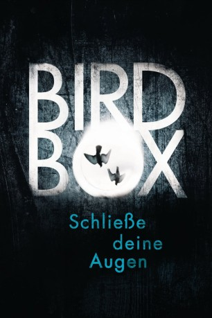

gesehen am 06.01.2019
gesehen am 06.01.2019Alternativ: Bird Box (Englischer Titel) gesehen am 06.01.2019
 
 IMDB-Wertung: 6.8 / 10
IMDB-Wertung: 6.8 / 10  Metascore:
Metascore: 
Ein mysteriöser Schrecken hat die Welt heimgesucht. Es handelt sich dabei um eine mysteriöse Macht, die seine Opfer in den Selbstmord treibt. Sobald man sie erblickt erlebt man seine schlimmsten Ängste. Um sich und ihre zwei Kinder vor diesem grausamen Schicksal zu bewahren, muss sich Malorie mit ihnen in dieser in Angst und Schrecken versetzten Welt durchkämpfen. Dies mit verbundenen Augen, um dem unheimlichen Wesen keine Angriffsfläche zu bieten. Malorie erfährt von einem Ort am Fluß, an dem ein Überleben, vielleicht möglich ist. In einem kleinem Boot wagt sie mit ihren Kindern die gefährliche Fahrt...
Jahr: 2018
Dauer: 124 Minuten
FSK:
Land: USA Studio: NetflixTonspuren: - , - , - , - , - ,
Untertitel: Deutsch, Englisch,
Auflösung: 1080p (1920x800) Größe: 8673 MB
Genre: Thriller, Horror, Drama, Sci-Fi
Regisseur: Susanne Bier
Drehbuch: Eric Heisserer, Josh Malerman
Soundtrack: Trent Reznor, Atticus Ross
Darsteller:
 Sandra Bullock als Malorie
Sandra Bullock als Malorie Trevante Rhodes als Tom
Trevante Rhodes als Tom John Malkovich als Douglas
John Malkovich als Douglas Sarah Paulson als Jessica
Sarah Paulson als Jessica Jacki Weaver als Cheryl
Jacki Weaver als Cheryl Rosa Salazar als Lucy
Rosa Salazar als Lucy Danielle Macdonald als Olympia
Danielle Macdonald als Olympia Lil Rel Howery als Charlie
Lil Rel Howery als Charlie Tom Hollander als Gary
Tom Hollander als Gary Machine Gun Kelly als Felix
Machine Gun Kelly als Felix BD Wong als Greg
BD Wong als Greg Pruitt Taylor Vince als Rick
Pruitt Taylor Vince als Rick Rebecca Pidgeon als Lydia
Rebecca Pidgeon als Lydia Taylor Handley als Jason
Taylor Handley als Jason Happy Anderson als River Man
Happy Anderson als River Man David Dastmalchian als Whistling Marauder
David Dastmalchian als Whistling Marauder Keith Jardine als Yelling Marauder
Keith Jardine als Yelling Marauder Kristopher Logan als Older Man
Kristopher Logan als Older Man Ted Hollis als Hospital Visitor (uncredited)
Ted Hollis als Hospital Visitor (uncredited)Datei: X:\2018(A-F)\Bird Box - Schließe deine Augen (2018, FSK, 1920x800).mkv seit 25.12.2018
Festplatte: HD 2017(A-Z)-2018(A-F)
 Es gibt insgesamt 151 Filme in der Gruppe '2018(A-F)'
Es gibt insgesamt 151 Filme in der Gruppe '2018(A-F)'